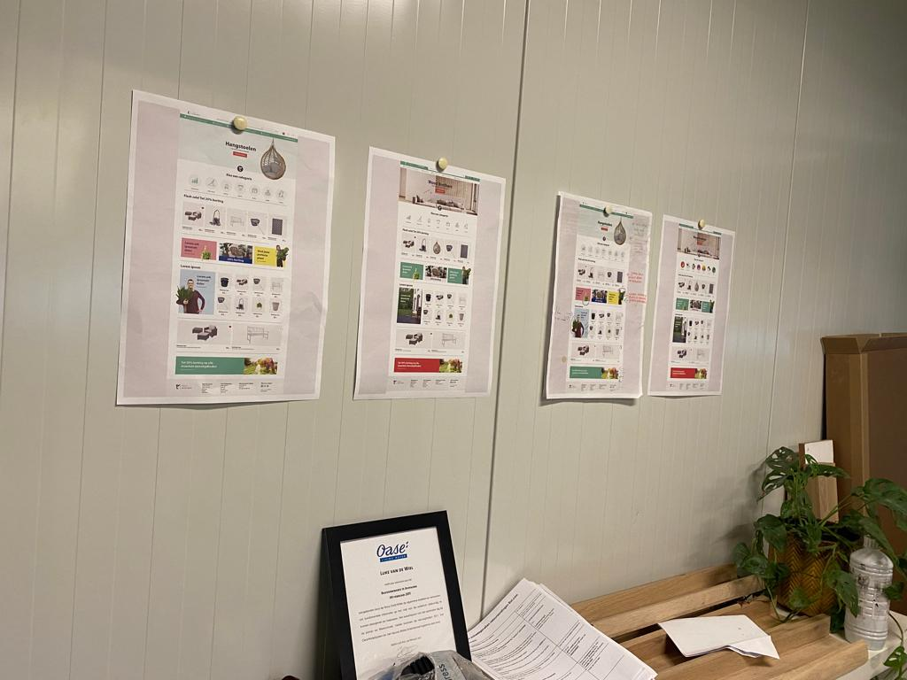

Tijdens mijn stage bij Tuinexpress.nl BV heb ik veel belangrijke beslissingen moeten nemen en verschillende taken aangepakt. Een van mijn hoofdtaken was het ontwikkelen van de Festivalzone website. Dit was een idee van Lucas van Kollenburg, die wilde dat er traffic naar de website van Festivalzone zou worden gegenereerd via een aparte website waarop festivals in Nederland zouden worden aangeboden en geadverteerd. Mijn taak was om data te verzamelen over deze festivals, zodat deze op de website geplaatst konden worden. .
Om dit te doen, heb ik de website grondig geanalyseerd en gebruikersfeedback verzameld. Vervolgens heb ik aanbevelingen gedaan voor verbeteringen en deze verwerkt in het ontwerp van de website. Ik heb Python gebruikt om de data te verkrijgen en deze vervolgens georganiseerd, zodat het gemakkelijk te gebruiken was. Chris, mijn contactpersoon, was zeer tevreden met het resultaat en zei dat de data heel nuttig was.
Dit was het begin van mijn stage en ik kreeg de eerste designs van de website te zien. Deze waren gemaakt door Lucas van Kollenburg en waren nagekeken door een tijdschriftdesigner. Echter, na het ontvangen van deze designs merkte ik al snel dat ze niet geschikt waren en dat niet alle functies geïmplementeerd waren. Ik besloot daarom om een gesprek in te plannen en dit te bespreken met Lucas. Hij gaf aan dat hij dit zou bespreken met Jouri (mijn begeleider) en Chris.
In de tussentijd kreeg ik de kans om te werken aan een tussentijdse website. Ook hiervoor ontving ik designs, maar deze hadden hetzelfde probleem als de eerste set. Ik besloot om een verzoek in te dienen om de website zelf te mogen structureren en de benodigde informatie erin te plaatsen. Lucas ging hiermee akkoord, dus ik kon aan de slag. Uiteindelijk heb ik een paar aanpassingen moeten uitvoeren op verzoek van Lucas, maar ik ben tevreden met het eindresultaat van mijn werkzaamheden op de tussentijdse Festivalzone website.
Nadat de opdrachtgevers een vergadering hebben gehad, hebben ze besloten dat Lucas van Kollenborg niet geschikt was als contactpersoon voor het Festivalzone project. In plaats daarvan werd Christiaan Vosman mijn contactpersoon. Chris is een marketingmedewerker en zou de designs voor de website maken en aan mij aanleveren. Eerder had ik aangegeven dat ik het fijner zou vinden als ik zelf het design zou mogen maken, gebaseerd op onderzoek en eventueel ook wireframes om een idee op te wekken. De opdrachtgevers bleven echter bij hun plan om Chris het design te laten maken, omdat ze geloofden dat dit beter in lijn zou zijn met de website van Tuinexpress.nl BV. Ik vroeg me af waarom de designs gestroomlijnd moesten zijn met de andere website, aangezien beide websites een ander thema hadden. Helaas kreeg ik geen antwoord op deze vraag..
Uiteindelijk heb ik de designs gekregen van Chris en ben ik gestart met het coderen van het design dat ik had aangeleverd gekregen. Nadat ik al veel tijd had besteed aan het maken van de website en het agenda-element, kreeg ik te horen dat ik moest werken vanuit een 'wolmart template'. Dit was voor mij nieuw, omdat dit niet eerder was besproken en het ook niet vermeld stond in het document dat we in week 1 hadden ontvangen. Ik was hierdoor wel wat demotiveerd, omdat ik juist heel enthousiast was geweest over dit project. Gelukkig was Chris wel behulpzaam en heeft hij me geholpen om de 'wolmart template' beter te begrijpen. Uiteindelijk heb ik geprobeerd om mijn bestaande elementen te gebruiken in combinatie met de template. Het was zeker een uitdaging om dit samen te voegen, omdat Jouri (mijn begeleider) had aangegeven dat we zoveel mogelijk de CSS elementen van de template moesten gebruiken en zo min mogelijk onze eigen CSS. Dit was moeilijk, omdat de template complexe CSS en HTML had en het moeilijk was om de code aan te passen. Al met al was het een uitdagende ervaring, maar ik ben blij dat ik het project heb kunnen afronden.
Over het algemeen heb ik mijn best gedaan om zo goed mogelijk te communiceren om misverstanden te voorkomen. Helaas is dat tijdens mijn stage niet altijd goed gelukt. Er waren vaak miscommunicaties, vooral omdat ik een wisseling kreeg van contactpersoon en niet veel hoorde van mijn begeleider. Vaak moest ik het met mijn contactpersoon bespreken terwijl mijn begeleider meer van de situatie wist omdat hij de ICT professional is. Persoonlijk vind ik dat heel jammer, maar ik zie het als een leerzame les waar ik van heb geleerd en die ik meeneem naar de toekomst. Ik zal ervoor zorgen dat mijn communicatie duidelijker overkomt en vanaf nu ook bevestiging vragen bij de andere persoon om na te checken of het goed is begrepen. Dit is ook de reden waarom ik uiteindelijk feedback heb gevraagd van mijn contactpersonen. U kunt die lezen door op de knoppen hieronder te klikken.
Zie Christiaans feedback Zie Lucas's feedbackNa enkele maanden te hebben gewerkt bij Tuinexpress.nl BV, realiseerde ik mij al vrij snel dat er geen balans was tussen mijn onderzoek en het werk dat ik moest uitvoeren voor Tuinexpress.nl BV. Chris vertelde mij dat omdat de Festivalzone 100% te maken had met mijn onderzoeksvragen, ik ook 100% aan de Festivalzone website moest werken. Na navraag bleek echter dat dit niet de bedoeling was. Ik heb dit samen met Tudor aangekaart bij Chris, maar toch bleef het werk dat ik moest uitvoeren voor Tuinexpress.nl BV hetzelfde.
Tijdens de 'terugkomdag' kwamen de problemen aan het licht en kreeg ik advies over hoe ik hiermee om kon gaan. Ik heb besloten om opnieuw te communiceren met Chris over wat er naar boven was gekomen tijdens de terugkomdag. Helaas leek er weinig te veranderen en uiteindelijk werden Tudor en ik teruggetrokken uit het bedrijf, waardoor de situatie bij Tuinexpress.nl BV helaas geëscaleerd raakte. Persoonlijk vond ik dit heel jammer, omdat ik enthousiast was over het project en had verwacht dat mijn stage anders zou verlopen. Uiteindelijk heb ik mijn best gedaan om met deze situatie om te gaan en geprobeerd om te blijven communiceren.
Tijdens mijn stage bij tuinexpress.nl BV heb ik veel geleerd en vooruitgang geboekt op het gebied van het maken van websites. Hoewel de situatie geëscaleerd was, was ik toch in staat om mijn kennis te vergroten en me beter te ontwikkelen. Ik had mezelf doelen gesteld om te verbeteren, waaronder op het gebied van front-end, onderzoek en back-end. Helaas heb ik me niet kunnen verdiepen in de back-end tijdens mijn stage bij tuinexpress.nl BV, maar ik heb wel ervaring opgedaan met Figma, wat ik ook zeer waardevol vond. In het algemeen heb ik gezien hoe het bedrijf opereert en heb ik meegekeken naar hun marketing- en verkoopprocessen, wat ook zeer interessant was.
Hoewel de stage niet is verlopen zoals ik had gehoopt en ik te maken heb gehad met onenigheid, ben ik blij dat ik de kans heb gehad om bij zo'n bedrijf te stage lopen en deze ervaring op te doen. Ik zal zeker wat ik heb geleerd meenemen naar de toekomst en mezelf blijven ontwikkelen. In de toekomst zou ik graag verder willen groeien als webontwikkelaar, bijvoorbeeld door meer te leren over de back-end en andere relevante technieken en vaardigheden. Ik ben benieuwd hoe ik me verder kan ontwikkelen in mijn carrière en welke kansen zich voor me zullen voordoen.